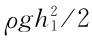
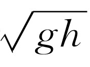
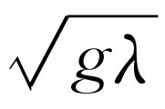
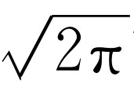

虽然我们已经完成了关于波的定量分析，但是为了对与波有关的种种现象作一些定性的介绍，我们增添了这一章。由于这些现象太复杂，在这里不能作详细的分析。既然我们已经用了好几章篇幅来讨论波，这一章的标题应该叫做“与波有关的一些较为复杂的现象”才更为恰当。
我们所讨论的第一个题目，是关于波源比波速或相速度运动得更快时所产生的效应。我们首先考虑具有一定速度的波，如声波和光波。如果有一个声源比声速运动得快，那么就会发生如下的情况：假定在某一瞬间，位于图51-1中x 1 处的声源发出一个声波，则在下一瞬间，当源移动到x 2 时，原先发出的波从x 1 扩展到以r 1 为半径的圆上和r 1 小于源运动的距离；当然，另一个波又从x 2 开始向外传播。当声源继续向前运动到x 3 时，又从那里发出声波，而现在从x 2 发出的声波则扩展到以r 2 为半径的圆上，从x 1 发出的声波扩展到以r 3 为半径的圆上。当然，这一系列事情是连续发生的，而不是一步一步来的。因此，我们有一连串的波圆，其公切线通过该时刻声源的中心。我们看到，声源不是像静止时那样产生球面波前，此时它所产生的波前在三维空间中形成一个圆锥面，在二维空间中形成两条相交的直线。很容易算出此圆锥面的角度。例如，在一定的时间间隔内，源移动了一段距离，比如说x 3 -x 1 ，此距离与源的速度v 成正比。在此期间，波前已向外扩展了距离r 3 ，它与波的速率c w 成正比。因此，很清楚，所张半顶角的正弦等于波的速率除以源的速率。此正弦只有当c w 小于v ，即物体（源）的速率比波的速率快时，才有解
顺便提一下，虽然我们认为要发声就必须有一个声源 ，但非常有趣的是，在介质中一旦物体运动得比声速快，就会发出 声音。也就是说，声音不一定具有某种纯音的振动特征。任何一个穿过介质而运动的物体，当它的速率大于波在介质中传播的速率时，将自动地从运动本身向各个方向发出波。这一现象对声音来讲很简单，但是对光来说也会发生这种现象。最初人们认为或许没有什么东西能够运动得比光速更快。然而，在玻璃内光的相速度比真空中的光速小，而且我们有可能发射一个具有很高能量的带电粒子，使它以接近于真空中光速的速率通过一块玻璃，而光在玻璃中的速率仅为真空中光速的2/3。正在运动的比媒质中的光速快的粒子，将产生一个以源为顶点的锥形光波，就像汽艇前进时所形成的尾波（事实上，它来自同样的效应）。通过锥角的测量，我们能够确定粒子的速率。这种用来确定粒子速率的技术，在高能研究中已作为一种测定粒子能量的方法。所有要测量的只是光的方向。
这种光有时被称为切连科夫辐射，因为它是首先由切连科夫观测到的。弗兰克和塔姆在理论上分析过这种光应有的强度。由于这项工作，这三人一起获得了1958年度的诺贝尔物理学奖。
对声音来说，相应的情况如图51-2所示，该图是一张超音速物体穿过气体时的照片。压强的变化引起了折射率的变化，利用适当的光学系统就能使这种波的边缘显现出来。我们看到超音速物体确实产生了一个锥形波。但是更加仔细的观察却发现表面实际上是弯曲的。它逐渐趋近于直线，但在靠近顶点的地方是弯曲的。现在我们必须讨论为何会有这种现象，这也就是本章要讨论的第二个题目。
图51-2 超音速抛射体在气体中所产生的冲击波
波速常常与振幅有关。对声音来说，速率与振幅的关系如下。一个穿过空气运动的物体，必须把空气推开，所以在这种情况下，所产生的扰动是某种压力阶跃，波前后面空气的压强比波（以正常速率传播）还没有到达的未受扰动的区域内空气的压强大。但在波前通过后，留下的空气已被绝热地压缩，因此它的温度升高。由于声音的速率随着温度的增加而增加，所以在跳变后面区域内的速率比在前面空气中的速率大。这意味着在阶跃后面产生的任何其他扰动，例如由于物体不断地推压空气所产生的扰动，等等，将传播得比前面的快，而声速则随着压强的增大而增大。图51-3说明了这一情形，图中在压强线上加上一些小的凸起部分，以帮助我们想象这一情况。我们看到随着时间的过去，后面压力较高的区域追上前面压力较高的区域，直到最后压缩波产生一个陡峭的波前为止。如果强度非常大，就立即形成陡峭的波前；如果强度相当弱，则需要很长的一段时间，事实上很可能在陡峭的波前形成以前声波已经散开和消失了。
图51-3 在相继的几个瞬间及时拍下的波前的“快照”
我们说话的声音所形成的压强，与大气压强相比是非常弱的——仅为百万分之一左右。但是当压强改变达一个大气压的数量级时，波的速度大约增加百分之二十，波前以相应的高速率变陡。在自然界中大概任何事件都不会以无限 大的速率发生。同时，我们所谓的“陡峭”的波前实际上具有一个非常薄的厚度，而不是无限陡峭的。波前变化的距离约为一个平均自由程，在这个距离内，波动方程的理论开始不适用，因为我们并没有考虑气体的结构。
现在，再参看图51-2，如果我们知道了靠近顶点的压强比后面离顶点较远处的压强大，从而角θ 较大，我们就能理解弯曲的原因。这就是说，弯曲是由于声速与波的强度有关所造成的。因此，原子弹刚爆炸时形成的波的传播速度比声波快得多，直到波传播到很远时，由于扩展而变弱，直到其压强的变化小于大气压强时为止。这时它的速率接近于空气中的声速（附带提一下，结果冲击波的速率总是比在前面的气体中的声速高，但比后面的气体中的声速低。这就是说，从后面来的脉冲将会到达波前，但是波前在媒质中行进的速率比信号的正常速率来得大，因此，一个人如果根据听到的声音来判断冲击波的到来已经太迟了。原子弹爆炸时所产生的光是最先到达的，但是由于没有声音信号走在冲击波的前面，因此在冲击波到达之前我们不可能知道它的光临）。
这种波的堆积是一种非常有趣的现象，其所依据的主要之点是：在一个波出现之后，合成波的速率应该更高。下面是同一现象的另一个例子。试考察长度和宽度一定的长水槽中的流水。如果有一个活塞或者一个横在水槽中的屏状物以足够快的速度沿着水槽运动，则水就像雪犁前面的雪一样地堆积起来。现在假定情况如图51-4所示，在水槽内某处水的高度有一个突变。可以证明，水槽中的长波在深水区比在浅水区中传播得快。因此，由运动的活塞所造成的任何新的能量的起伏和不匀都将向前移动，并在前面堆积起来。另一方面，从理论上来说，我们最终得到的就是一个具有陡峭波前的水流。然而如图51-4所示，其中还有一些复杂的情况。照片上所拍摄的是一个冲过来的波，活塞在水槽的右方远处。起先正如我们所预料的那样，它看起来可能像是一个正常的波，但当它沿着水槽越走越远时，波就变得越来越陡，直到出现照片上的状态为止。当一部分水下落时，在水面上产生可怕的翻腾，但是实质上它是一个很陡的前沿，并不搅动前面的水。
实际上水比声音复杂得多。然而，正是为了阐明一个论点，我们将设法分析这种所谓“激浪 ”在水槽中 的速率。这个论点对我们的目的来讲没有任何基本的重要性——它不是一个重要的结论——仅仅说明，利用我们已知的力学规律就能够解释这个现象。
想象现在有一高度为h 2 的水以速度v 运动，而它的波前以速度u 进入高度为h 1 的平稳的水中，如图51-5（a）所示。我们希望确定波前运动的速率。在时间Δt 内，原先位于x 1 的垂直平面，移动了距离v Δt 而到达x 2 ，同时波前运动了u Δt 。
现在我们应用物质不灭和动量守恒的方程。首先应用物质不灭公式。我们知道：对于单位宽度的水槽，流过x 1 处的物质数量h 2 v Δt （图中斜线部分），可用另一个其数量为（h 2 -h 1 ）u Δt 的斜线部分来补偿。因此，用Δt 去除两者，得vh 2 =u （h 2 -h 1 ）。但这还不够，因为我们虽然知道了h 2 和h 1 ，但还不知道u 或v ，我们要设法求出它们。
下一步是应用动量守恒。虽然我们还没有讨论过水的压强或在流体力学中的任何其他问题，但是无论如何，我们清楚地知道，在一定深度处水的压强恰好能支持它上面的水柱。因此，水的压强等于水的密度ρ 乘g ，再乘水面到该处的深度。既然压力随着深度而线性地增加，那么在x 1 处的平面上的平均压强即ρgh 2 /2，这也是把该平面推向x 2 处时，作用在单位宽度和单位高度上的平均力。因此，我们再乘上h 2 就得到从左面作用到水上的总的力。另一方面，水的右边也存在着压力，使该区受到一个相反的力。用上面同样的分析方法得到这个力为 。现在我们必须使力和动量的变化率保持平衡。因而我们必须算出图51-5（b）情况中的动量比图51-5（a）的动量多了多少？我们看到具有速率v 的物质所增加的质量恰好为ρh 2 u Δt -ρh 2 v Δt （每单位宽度），用v 去乘就得到所增加的动量，它应等于冲量F Δt
如果将已经得出的vh 2 =u （h 2 -h 1 ）一式代入上式以消去v ，并加以简化，最后就得到u 2 =gh 2 （h 1 +h 2 ）/（2h 1 ）。
假如高度差别很小，以致h 1 和h 2 近似相等，则速度等于 。我们以后将会看到，只有在波长大于水槽深度时这个结果才是正确的。
对于声波我们也可以作类似的处理——包括内能守恒，但熵不守恒，因为冲击波是不可逆的。事实上，如果在激浪问题中检验能量守恒的话，我们发现能量是不守恒的。如果高度差别不大，能量几乎完全守恒。但是当高度差别一旦变得很明显，就有净的能量损失。如图51-4所示，水的下落和翻腾就显示了这一点。
在冲击波的情况下，从绝热反应的观点来看，存在着相应的表观能量损失。在冲击波经过后，其后面的声波中的能量转化为气体的热能，这相应于激浪中水的翻腾。对于声波来讲，解这个问题需要有三个方程，而且正如我们已经看到的那样，冲击波后面的温度和它前面的温度是不相同的。
如果我们设法形成一个上下颠倒的激浪（h 2 ＜h 1 ），那么我们发现每秒钟损失的能量是负的。因为它不能从任何地方得到能量，所以激浪不能维持自己，它是不稳定的。即使我们引起了这种类型的波，它也会变平而消失，因为对于我们所讨论的这种情况，导致波前陡峭的速度对高度的依赖关系有着相反的影响。
我们接下去要讨论的一类波是固体中的更为复杂的波。我们已经讨论过气体和液体中的声波，在固体中存在一种与声波完全类似的波。如果突然推动一下固体，它就会被压缩。固体抵抗压缩就产生类似于声音的波。然而在固体中还可能存在另一类波，这类波在流体中是不可能存在的。如果从侧向推压固体使之畸变（称为剪切变 ），那么固体将力图把自己拉回来。如果我们（由内部）使液体畸变，维持一会儿，使它稳定下来，然后放开，则液体将保持这个样子。但是如果我们拿一块固体并推它，就像使一块“果胶”发生剪切变一样，那么当我们放开它时，它将恢复原来的样子并产生剪切 波。从定义上来说，固体和液体的区别就在于此。剪切波的传播方式和压缩波相同。在所有的情况下，剪切波的速率小于纵波的速率。就它们的偏振而言，剪切波更类似于光波。声波没有偏振，它只是一种压力波。而光波则具有一个垂直于传播方向的特征取向。
在固体中有两类波。第一类为类似于声波的压力波，它以某一速率行进。如果固体是非晶状的，那么沿任何方向偏振的剪切波将以一个特征速率传播（当然所有固体都是晶状的，但是如果我们用一块由各种取向的微晶构成的固体，则晶体的各向异性最终得到了平衡）。
下面是另一个与声波相关的有趣的问题。如果固体中的波长变得较短，而且越来越短，那么将会发生什么现象？波长最终能达到多短？有趣的是它不能短于原子之间的空间距离，因为假如有一个波，其中的一个点上升，相邻的一个点下降，等等，显然可能存在的最短的波长就等于原子间距。从振动模式来看，我们说有纵向模式，横向模式，长波模式和短波模式。当我们考虑的波长能与原子间距相比拟时，速率不再是常数，在速度与波数有关的地方就有色散效应。但是，最终横波的最高模式将是各相邻原子有相反的运动方向。
现在从原子的观点来看，情况就像我们讨论过的两个单摆。对此存在两种模式，一种是两个摆一起运动，另一种是它们反向运动。我们可以采用另一种方法来分析固体波，即用耦合谐振系统的方法来分析，该系统是由大量单摆组成的，它的最高模式是这些单摆每相邻两个的振动方向相反，而较低的模式则具有不同的相位差。
由于最短的波长是如此之短，以至于在技术上通常无法利用。但是，它们是非常令人感兴趣的，因为在固体的热力学理论中，固体的热学性质，例如比热，可以根据短声波的性质来分析。当我们进一步研究波长更短的短声波极限时，必须归结为原子的个别运动，这两件事最终是一样的。
固体中的声波——纵波和横波的一个很有趣的例子是在固态地球里的波。我们不知道这些噪声的来源，但是在地球内部不时发生地震——某些岩石滑过另外一些岩石，这很像小的噪声。所以从这种源发出像声波那样的波，其波长比我们通常所考虑的声波的波长要长得多，但是仍然是声波，它们在地球里到处传播。然而地球是不均匀的，而且压强、密度及压缩性等等性质随着深度而变化，因此速率也随着深度而改变。于是波就不沿直线行进——这里存在着一种折射率，它们沿着曲线行进。纵波和横波具有不同的速率，所以对于不同的速率就有不同的解。因此，如果我们在某个地方放置一个地震仪，并且在别的地方发生地震后注意观察仪器指针的跳动，那么我们不仅仅得到一个不规则的跳动。我们也许先得到一阵跳动，接着平静下来，然后又是另一阵跳动，所发生的情况取决于地震仪的位置。如果地震仪和震源靠得足够近，我们将先收到从扰动处传来的纵波，然后过一会儿，又收到横波，因为横波行进得较慢。如果我们对波的传播速率以及地球内部有关区域的成分有足够的了解，则通过测量收到这两个波的时间差，就能断定地震发生在多远的地方。
图51-6所示为在地球内部波的行为的一个例子。两种类型的波由不同的符号表示。如果在图上标为“源”的地方发生一个地震，横波和纵波将在不同时刻，经由最直接的路径到达地震台，同时也可能在不连续处发生反射，结果经过另外的不同路径在不同时间到达地震台。原来在地球内部存在一个核心，该核心不能传播横波。如果地震台在源的正对面，横波仍能到达，但是计时不正确。所发生的情况是横波到达核心处，并且每当横波到达两种介质之间的斜面上时，就会产生两个新的波，一个横波和一个纵波。但是在地球核心内部，横波不能传播（或至少没有证据表明它能传播，只有对纵波才有证据）。当波再度跑出核心时，又以纵波和横波这两种形式向地震台行进。
我们正是从这些地震波的行为断定横波不能在内核圆的里面传播。从不能传播横波这个意义上来说，这意味着地球的中心是液体。我们了解地球内部构造的唯一方法，就是研究地震。所以，利用在不同的地震站台对多次地震所作的大量观察，就可以知道地球内部的详细情况——速率、曲线等等。知道了不同类型的波在每一深度处的速率，我们就有可能计算出地球的简正模式。因为知道了声波的传播速率，也就知道了两种波在每一深度的弹性性质。假如使地球形变成一个椭球，再放开，只要把在椭球中到处传播的波叠加起来就能确定其自由模式的周期和形状。我们已经断定，如果有一个扰动，就会产生许多模式——从最低的椭球模式到结构比较复杂的较高的模式。
1960年5月发生在智利的地震产生了足够强的“噪声”，这个信号在地球内绕行了多次，同时一个非常精密的新的地震仪刚好制成，它及时地测出了地球基谐模式的频率，我们将这些数值与用声波理论从已知的速度计算出的理论值进行了比较，这些速度是从与该地震无关的其他地震中测得的。实验的结果如图51-7所示，这是信号强度与其振动频率的关系曲线（傅里叶分析 ）。注意，在某些特殊频率所接收到的信号比在其他频率所接收到的信号强得多，即存在着非常确定的极大值。这些频率就是地球的固有频率，因为它们是地球能够振动的主要频率。换句话说，如果地球的总体运动是由许多不同的模式组成，那么可以预期，对于每个地震台，都能得到表示许多频率叠加的不规则跳动。如果我们按照频率来进行分析，应该能够找到地球的特征频率。图中的垂直黑线是计算出来的频率值，我们发现理论值与实验值非常一致，这种一致性是由于这样的事实，即对于地球内部来讲声学理论是正确的。
图51-7 在秘鲁的娜娜（Ñaña）和加利福尼亚的伊莎贝拉（Isabella）的地震仪上所探测到的功率与频率的函数关系。图中所示的相干性可作为这两个地震台之间的耦合程度的量度
图51-8表示一个非常细致的测量，它对最低模式（地球椭球模式）有较好的分辨能力。它揭示了令人非常惊奇的一点，这就是极大值不是单一的，而是双重的，一个极大值在周期54.7 min处，另一个极大值在周期53.1 min处，两者略有差异。所以存在两个不同频率的原因，我们在测量的时候并不知道，虽然在当时或许能够找到其原因。现在至少有两种可能的解释：一种是在地球的分布中可能存在着不对称性，结果导致两个相似的模式。另一种可能更令人感兴趣，这就是设想从源发出的波沿两个方向绕地球传播。由于运动方程中存在地球的自转效应，它们的速率将不相等，而这种效应在进行上述分析时并没有考虑进去。在转动体系中物体的运动因科里奥利力而受到修正，这些因素可能引起所观察值的分裂。
关于用来分析这些地震的方法，在地震仪上得到的曲线并不是振幅对频率的函数曲线，而是位移对时间的函数曲线，所以总是一条非常不规则的示踪曲线。为了找出所有不同频率所对应的不同正弦波各占多少，其窍门是用某个确定频率的正弦波去乘这些数据，再进行积分，也就是对其求平均，在求平均的过程中，所有其他频率都消失了。我们所引用的这些图就是将数据乘以每分钟不同周数的正弦波后进行积分所得出的积分图。
下一个令人感兴趣的波是水波，每个人都很容易看到这种波，而且在基本教程中常常用它来作为波的例子。我们立即就会知道，这可能是最糟糕的例子，因为它们没有一个方面像声波或光波；它们具有波所具有的全部复杂性。我们从深水中的长水波开始讲起。如果我们认为海洋是无限深的，并且在海面上有一个扰动，那么就会产生波。各种各样的无规则运动都会出现，但是由非常轻微的扰动所形成的正弦型运动，可能看上去很像普通向岸边移动的平滑的海浪。当然具有这种波的水平均地讲，仍是不流动的，而是波的移动。这是一种什么运动？是横波还是纵波？它应当都不是，既不是横波，也不是纵波。虽然在某个给定位置处水交替地成为波谷和波峰，但由于水的守恒，它不可能只是简单地上下运动。也就是说，如果水向下降落，那么水将跑到哪里去呢？水基本上是不可压缩的。波的压缩速率，即水中声波的压缩速率是非常非常高的，我们现在不去考虑它。因为在目前的这种尺度上，水是不可压缩的，所以当波峰下降时，水必然离开原来的区域。实际发生的情况是靠近表面的水的粒子近似地作圆周运动。当平滑的海浪移过来时，漂浮着的救生圈里的人可以注视近旁的物体，并且看到它是在作圆周运动。因此水波是纵波和横波的混合物，比一般的波更为复杂。在水中越深的地方，所作的圆周运动的圆就越小，直到在适当深处这种运动消失为止（图51-9）。
图51-9 深水水波是由水的粒子作圆周运动而形成的。注意，圆与圆之间的对称性相移。漂浮物体将怎样运动呢？
求出这种波的速度是一个有趣的问题：波速必定是水的密度、重力加速度（重力是形成波的恢复力），或许还有波长和水的深度的某种组合。如果我们选取水的深度趋于无限的情况，则波速不再与深度有关。关于波的相速度，不论我们将得到什么样的公式，都必须把各种不同的因子组合起来，以构成正确的量纲。如果我们试图用各种方法来进行这种组合，我们发现要构成速度，只有一种方法，即将密度、g 和λ 组合起来，即 ，其中根本不包含密度。实际上，关于相速度的这个公式不是严格正确的，但动力学的完整分析（这个我们将不去探究）表明，上面我们得到的相速度公式只差一个 的因子，即
有趣的是长波比短波跑得快。因此，如果一只小船激起了传播得很远的波浪（因为有一个赛车驾驶员开着摩托艇飞驶而过），那么过了一会儿，波到达岸边，起先缓慢地拍溅海岸，然后越来越快地拍溅海岸，因为先到达的波是长波。随着时间的推移，到达的波变得越来越短，因为波的速度按波长的平方根变化。
有人也许会表示异议，认为“这是不对的，为了解决这个问题，我们必须着眼于群 速度”！这当然是正确的。相速度的公式并不能告诉我们什么样的波首先到达，能告诉我们这些的是群速度。因此我们不得不求出群速度。只需假定速度随波长的平方根而变化（这是问题的全部要求），就可证明群速度是相速度的一半，我们把这个证明留作习题。群速度也随波长的平方根变化。群速度怎么会只有相速度的一半呢？如果有人注视由行进的小船所造成的一群波，并盯住一个特定的波峰，他会发现这个波峰在波群中向前运动，逐渐变弱，最后在前端消失。奇怪而不可思议的是，在后面的较弱的波却挤着向前行进，并且变得越来越大。简单地说，波穿过波群运动，而波群的速度仅为波速的一半。
由于群速度和相速度不相等，所以运动物体通过时所产生的波不再只是简单的锥形，而是有趣得多。我们可以在图51-10中看到这个现象，该图显示了在水中运动的物体所产生的波。注意，这种波和声波大不相同。在声波中，速度与波长无关，我们将只有一个沿着锥面向外行进的波前，但这里的情况不同，波在小船的后面，其波前的运动方向与小船的前进方向平行，而且在边上还有小波，其波前的运动方向与小船前进方向成别的角度。我们只要知道相速度正比于波长的平方根，就能够巧妙地对整个波的图样进行分析。奥妙在于这个波的图样相对于小船（以恒定速度前进）是静止不动的，而任何其他波形都将从小船处消失。
图51-10 小船的尾流
迄今为止，我们所讨论的是长水波，在这种情况下恢复力是由重力引起的。但是当波在水中变得很短时，主要的恢复力则是毛细引力，亦即表面能和表面张力。对于表面张力波，可以证明其相速度为
其中T 是表面张力，ρ 是密度。它与重力所形成的波正好相反，在波长变得很短时，波长越短，相速度越大 。当同时存在重力和毛细作用时，按照通常的做法，我们得到两者的组合
其中k =2π /λ 是波数。所以水波的速度确实是非常复杂的。图51-11表示相速度作为波长的函数，对于很短的波，其速度很快；对于很长的波，其速度也很快，这两者之间存在一个波能够行进的极小速率。群速度可以通过公式来计算：对于涟波，它为相速度的3/2，对于重力波则为相速度的1/2。在极小值的左面群速度大于相速度；在极小值的右面群速度小于相速度。有许多有趣的现象与这些事实有联系。首先，由于群速度随着波长的减小而急剧地增加，因此如果我们造成一个扰动，则此扰动将有一个最慢的末端，以相应波长的最小速率行进，而在前面的以较高的速率行进的波将是短波和非常长的波。在水槽中很难看到长波，但很容易看到短波。
所以我们看到，经常被用来作为波的简单例子的涟波是很有趣和复杂的，它不像简单的声波和光波，事实上几乎没有陡峭的波前。主波的前面有从后面跑出的小波。因为水有色散，所以在水中的剧烈的扰动并不能产生具有陡峭波前的波。首先到达的是非常细小的波。顺便讲一下，如果一个物体以一定的速率在水中运动，由于所有不同的波以不同的速率行进，所以产生了一个相当复杂的图样。我们可以用盛水的浅盘来演示这一现象，以便能够看到跑得最快的那些波是细小的表面张力波。在后面则有某种类型的跑得最慢的波。若使盘底倾斜，可以看到水浅的地方波的速率较低。如果波的前进方向与最大斜线成一角度，那么这个波就会弯曲，并有沿着那条线行进的趋势。用这种方法我们能够说明各种不同的情况，并得出结论：水中的波比空气中的波要复杂得多。
在作循环运动的水中，长波在水浅的地方的速率较慢，在水深的地方的速率较快。这样，当水来到较浅的海滩时，波跑得慢了。但是在水较深的地方，波跑得比较快，所以我们得到冲击波的效应。这次由于波并非如此简单，故冲击波会大大变形，并使自己向上弯曲成大家所熟悉的样子，如图51-12所示。这就是波冲上海岸时所发生的情况，在这种情况下，自然界真正的复杂性被揭露无遗了。然而，现在还没有一个人能够弄清楚波在破裂时应具有怎样的形状。当波很小时，这是相当容易的，但当一个波变大和破裂时，情况就复杂得多了。
图51-12 水波
在由水中运动的物体所造成的扰动中能够看到关于表面张力波的一个有趣的特征。从物体本身的观点来看，水在不停地向后流，而最终位于物体周围的波总是这样的波，它们恰好具有同水中的物体保持相对静止的适当速率。类似地，在小河中的物体周围，河水从物体旁边流过，波的图形是稳定不动的，这些波正好具有恰当的波长，使其以与河水相同的速率行进。但是，如果群速度小于相速度，则扰动在河流中向后传播，因为群速度赶不上水流的速度。如果群速度大于相速度，则波的图形将出现在物体的前面。如果我们仔细地注视河中的物体，可以看到在物体的前面有小的涟波，在物体的后面则有“咕咚咕咚”的长水波。
表面张力波的另一个有趣的特性，可以在倾倒液体时观察到。例如，如果牛奶以足够快的速度从瓶中倒入流水中，两者相交后可以看到在流水中有许多线条。它们是从边缘处的扰动出发向外传播的波，这种波与河流中物体周围的波非常相似。在这种情况中存在着来自两侧的效应，这些效应产生了交叉的图形。
我们已经研究了波的一些有趣的性质以及相速度对波长的依赖关系，波速对水的深度的依赖关系等等各种复杂的情况，这一切展现了真正复杂的、因而也是有趣的自然现象。